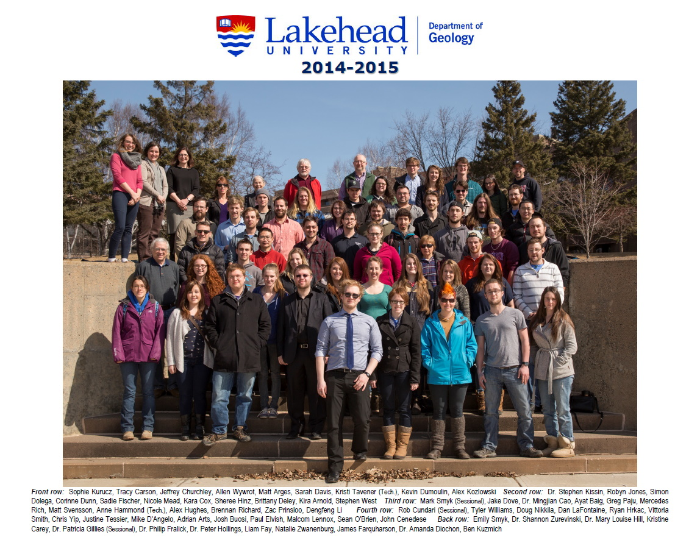
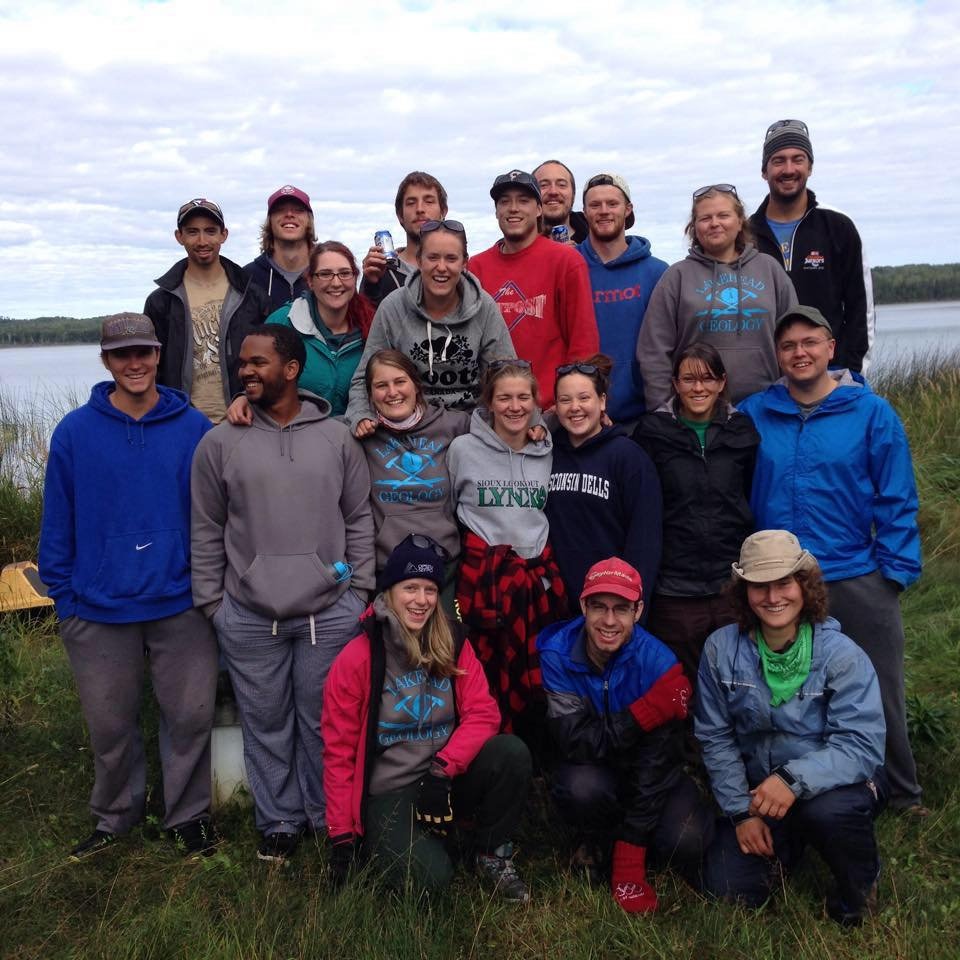

My interaction with the wilderness early on in life is probably what led to me go into the field of geology. That being said geology was not my first choice for university but instead I initially began a degree in mathematics. After a few years of pursuing my math degree I realized that path is not one I wanted to continue going down. Switching to geology was a great decision and resulting in myself meeting wonderful people whom I call friends to this day.
The first picture on the left is my graduating class of 2015. A fair amount of the people in the photo I directly worked with for a few years after graduating as Lakehead University is sort of the hub of training Northern Ontario geologists. The second picture is that of my 2 week long 4th year fieldschool and the fantastic people I had the pleasure of undergoing such an adventure with.
I was very lucky with my schooling as I got to learn under some of the best professors in their respective fields. Most people in the geology community will remember sedimentologist Dr. Fralick if they ever met him or been to one of his talks. Unbeknownst to him he was my first professor of geology and is one of the biggest reasons I even went into the field.
Funny enough as any geologist knows the rock in the header is actually a "soft rock" specifically sandstone but despite that reference to soft rock I have a preference towards hard rock geology and more specifically structural and metamorphic geology. I enjoy thinking of the deposits/lithologies in their 3-dimensional form and basically playing detective to figure out the most likely area for a deposit to form. This takes immense skill and the knowledge of so many geological disciplines to do well and be able to make accurate predictions to know where to explore next. I am no expert in this but I was able to dabble in this practice throughout my geological career thus far.
This brings me to today where I am currently attending the GIS Specialists course at Fleming College. The one thing that working in geology lacked for me is that it is incredibly hard to get employers to pay you to learn GIS software and skills when they already have professionals doing that work. So after a few years in the field I decided to come back to school to undertake that myself and build my skillset towards a field I really want to be a part of.